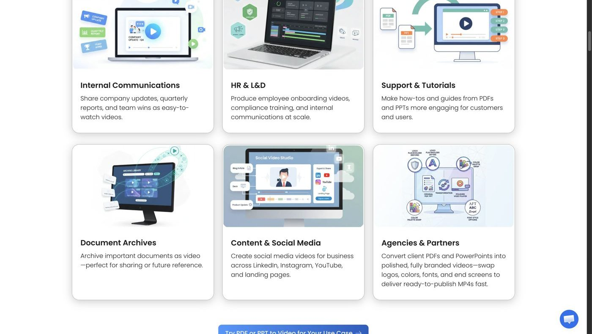

01The challenge
Voomo turns text, PDFs and presentations into professional videos with synthetic avatars — in under 60 seconds, across 145+ languages. The catch: our target users were marketers, trainers and creators with zero video editing skills, entering a market already crowded with HeyGen and Colossyan.
The product had powerful AI underneath — avatar generation, voice cloning, automated editing — but power means nothing if the first five minutes feel intimidating. My job was to make generative video feel as simple as writing an email.
02My role
- End-to-end product design — complete website interface and the mobile application, from information architecture to final UI.
- Dashboard & interaction flows — the creation journey from prompt → script → avatar & voice selection → preview → export.
- Avatar library at scale — produced 500+ synthetic avatars using Midjourney, Runway ML and Freepik, defining the visual consistency rules that kept the library coherent.
- Marketing surface — landing pages, use-case pages and conversion flows for the public website.
03Process & key decisions
Competitive teardown first. I mapped the onboarding of HeyGen, Colossyan and Jogg.ai screen by screen. The pattern: all of them front-loaded configuration. Voomo's bet became the opposite — show a result fast, let users refine after.
One primary path. Instead of a feature-grid dashboard, the home screen asks a single question: what do you want to turn into a video? Document, text or idea. Everything else — avatars, voices, languages — appears progressively, only when relevant.
Designing the avatar library like a design system. With 500+ AI-generated avatars, inconsistency was the enemy. I defined framing, lighting and expression rules before generating at scale, so the library feels curated rather than generated.


04Outcome
Voomo shipped as a complete product — website, dashboard and mobile app — and now serves a global audience of creators who never touch a video editor. The avatar pipeline I designed became a reusable production process for the company's next product, Avatario.